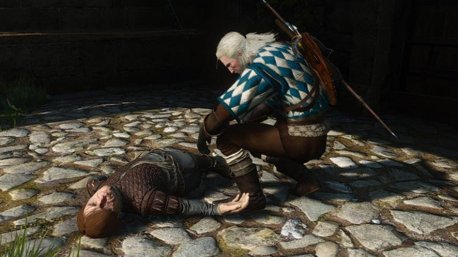

- ACCUEIL
- BANDE-ANNONCE
- JEUX A VENIR
- ACTUS JEUX-VIDEO
- EASTER EGG*S
- SPEEDRUN
The witcher 3
Quand Geralt rencontre Tyrion
Dans l’archipel de Skellige, vous pouvez vous rendre en bateau sur une petite île à l’est d’Argot Skellig qui se nomme Kaer Almhult. Sur cette île se trouve une forteresse en ruine remplie de pirate. Si vous explorez la forteresse vous trouverez plusieurs cellules verrouillées. Récupérez la clé dans la dernière pièce au fond et ouvrez ensuite la cellule voisine. Les fans de Game of throne reconnaîtront facilement le cadavre du nain au sol puisqu’il s’agit de Tyron Lannister. Vous remarquerez sa tenue très similaire, sa cicatrise au visage identique et enfin la cellule à ciel ouvert où il avait été retenu dans la saison 1 de la série.
